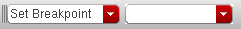
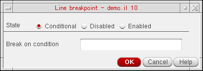
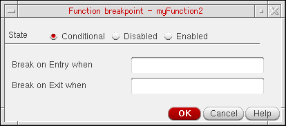
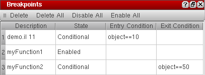
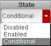

3
Controlling Program Execution
This chapter introduces the features that help you control the flow of your program. By using these features, you can determine where the program execution pauses. You can then inspect your code, start, stop, and step through lines of code, and examine or modify the values of the various variables as required. This chapter is organized into the following sections:
Understanding Breakpoints
Breakpoints direct the debugger to pause the execution of a program at a certain point in the code or on the occurrence of a certain condition. During this suspended state, the program is said to be in break mode. Entering the break mode does not terminate the execution of your program. You can resume the execution at any time by single stepping through the lines of code or running the program from breakpoint to breakpoint using the Continue command.
In the break mode all variables and functions remain in the memory. This enables you to examine their values to determine the possible errors in the program.
You can set the following types of breakpoints in SKILL IDE:
-
Line breakpoints
A line breakpoint is triggered when the line it is set on is reached. -
Function breakpoints
A function breakpoint is triggered when the function it is applied to is entered or exited, depending on how you configure the breakpoint. Program execution in this case pauses when the function is called or when it returns control.
Unconditional and Conditional Breakpoints
Unconditional breakpoints cause the debugger to pause the program execution at a given line of code.
To add flexibility, you can set conditions on breakpoints, such that the program execution pauses only when the breakpoint condition is satisfied. Such breakpoints are called conditional breakpoints.
By using conditional breakpoints, you can stop the code execution on specific lines of code, at the entry points of functions, on call returns, or on both. In conditional breakpoints, you define a condition—an expression that returns a logical value, for example, i==10. This condition is evaluated every time that breakpoint is reached. If the condition is satisfied, program execution pauses.
The following operators can be used to construct conditional expressions:
Configuring Conditional Breakpoints
You can configure breakpoint conditions to suit your debugging needs. For example, you can temporarily disable a breakpoint without deleting it or change the entry or exit criteria for a function breakpoint.
Enabling and Disabling Conditional Breakpoints
Specifying Breakpoint Entry and Exit Criteria
Enabling and Disabling Conditional Breakpoints
The SKILL IDE debugger provides the following conditional breakpoint options to help you enable or disable conditional breakpoints:
- Conditional: The debugger stops the program execution at the breakpoint only if the breakpoint condition is true.
-
Disabled: The debugger never pauses the program execution at the breakpoint, whether or not the breakpoint condition is true.
This variation of conditional breakpoint disables a breakpoint while preserving the location and condition of the breakpoint. You can use this option instead of deleting the conditional breakpoint. The advantage of using this option is that you do not have to find the location of the breakpoint in the source to set it again. -
Enabled: The debugger always pauses the program execution at the breakpoint, whether or not the breakpoint condition is true.
This variation of conditional breakpoint is useful in cases where you want to test the state of the program under all conditions. For example, you define a variablei=i+2in your program and set the breakpoint condition such that the breakpoint is triggered wheni==8. Now, if the value ofistarts at 1, the breakpoint is never triggered sinceiwill always have an odd value. In such a scenario, to see how the value ofiprogresses through each iteration, even wheni==8is not true, set the conditional breakpoint to Always.
Specifying Breakpoint Entry and Exit Criteria
Function breakpoints pause the program execution when control enters or exits the function to which the breakpoint is applied. You can specify an entry or an exit criteria for a function such that the breakpoint is triggered only when the given criteria is met. For example, if you have a function myTest(object) you can set a breakpoint that activates only when the argument object has a specific value (say object==4) on entry to the function. You can also specify an exit criteria, which is tested before the function returns the control back to the program.
You have the following choices for setting up an entry and exit criteria:
- Break on Both Entry and Exit when: The same condition is defined for both function entry and exit. When you use this option, the execution is suspended twice, both when the control enters and leaves a function. This option is useful when you want to test how a particular condition affects a function.
-
Separate Entry/Exit Criteria: Different conditions are defined for function entry and exit. Use this option when you want to test the return value of the function. For example, if you are aware that the value of
objectchanges during the course of execution of themyTestfunction, but are only interested in knowing when it becomes0, you can set the exit criteria toobject==0.
Using Breakpoints
Setting Unconditional Breakpoints
When you execute a program on which breakpoints have been set, the debugger stops just before executing the line of code that contains the breakpoint and highlights it in yellow. At this point, you can evaluate variables, set more breakpoints, or use other debugging features.
Setting Unconditional Line Breakpoints
To insert breakpoints on a particular line in your code:
- In the source code pane, click the line of code where you want to set a breakpoint and do one of the following:
append, append1, car, cons, copy, list, listp, arrayref, defstructp, strcmp, strlen, strncmp, substring, difference, fixp, eq, equal, memq, nequal, null, mapcan, mapcar, return, boundp, and apply.Setting Unconditional Function Breakpoints
You can set a breakpoint on a function so that the breakpoint is triggered every time the function is called. Such breakpoints are also called entry breakpoints because these are set on the function entry points. As with line breakpoints, you can use the Set/Unset Breakpoint command to insert function entry breakpoints.
-
In the source code pane, click the line of code containing the function on which you want to set a breakpoint and do one of the following:
- Click in the left margin of the program statement.
-
Right-click the program statement and choose Set/Unset Breakpoint from the context-menu. The Function breakpoint dialog box displays. Click Enabled and then OK to set an unconditional function breakpoint.You can also set an unconditional function breakpoint using the Search toolbar. In the Search toolbar, choose Set Breakpoint from the first drop-down list box. Then, specify the name of the function you want to set the breakpoint on in the second drop-down list box, and press Enter.
Setting Conditional Breakpoints
When you specify conditions for breakpoints, the debugger stops only when the breakpoint is triggered and its associated condition is met. If the condition evaluates to false, the program continues to run.
Setting Conditional Breakpoints on Lines
To set a conditional breakpoint on a line:
-
In the source code pane, click the line of code where you want to set a conditional breakpoint and do one of the following:
- Right-click in the left margin of the source code pane and choose Set/Modify Conditional Breakpoint from the context menu.
The Line breakpoint dialog box displays.
Figure 3-1 Line breakpoint dialog box - Select an appropriate breakpoint criteria. The available options are: Conditional, Disabled, and Enabled. For more information about breakpoint options, see Enabling and Disabling Conditional Breakpoints
- In the Break on condition field, specify the condition that you want to evaluate when the breakpoint is reached.
- Click OK.
Setting Conditional Breakpoints on Functions
To set a conditional breakpoint on a function:
- In the source code pane, click the line containing a program function.
-
Right-click in the left margin of the source code pane and choose Set/Modify Conditional Breakpoint from the context-menu.
The Function breakpoint dialog box displays.
Figure 3-2 Function breakpoint dialog box - Select an appropriate breakpoint criteria. The available options are: Conditional, Disabled, and Enabled. For more information about breakpoint options, see Enabling and Disabling Conditional Breakpoints
- Specify when the breakpoint condition needs to be evaluated. You have the following options:
- Click OK. When finished, a conditional breakpoint icon displays in the left margin of the source code pane.
Important Points to Note
If the function on which you set the breakpoint is a regular function, the breakpoint is set only on that function; if it is a SKILL++ method (with a defmethod declaration), then the breakpoint is set only on that particular method’s declaration; and if it is a generic function (with a defgeneric declaration) then the breakpoint is set on all methods that belong to that function.
If you do not specify a valid entry or exit criteria in the Function breakpoint dialog box, a warning message displays in the CIW, indicating an incomplete breakpoint criteria. Specify the criteria again.
Clearing Breakpoints
If you no longer need a breakpoint, you can remove it. Once you remove the breakpoint, the the debugger will no longer stop the execution at that point.
Clearing Unconditional Breakpoints
To remove an unconditional breakpoint from a specified line or function:
The toggle action removes the breakpoint from the code and as a result, the sign disappears.
Clearing Conditional Breakpoints
To clear a conditional breakpoint, in the source code pane, click in the line of code which contains the breakpoint. Then, do one of the following:
The toggle action removes the breakpoint from the code causing the conditional breakpoint icon to disappear.
Clearing all Breakpoints
To clear all breakpoints, choose Debug – Remove All Breakpoints or click Delete All in the Breakpoints assistant.
Stepping through Your Code
After the debugger encounters a breakpoint and pauses program execution, you can step through the rest of the program statements, one statement at a time. You can use the Next command to advance to the next executable statement or you can use the Step and Step out commands for stepping through the code.
Choose Debug – Step to instruct the debugger to execute the next line of code. If it contains a function call, the debugger executes the function call and stops at the first line in the function. Choose Debug – Step Out if the control is with a function and you need to return to the calling function. The Step Out command causes the function code to be executed until the function returns the control.
debugMode is off, some warning messages might appear in the CIW. To avoid the warning messages, set <function-name>.debugMode=t.Choose Debug – Continue to resume the program execution after a breakpoint is encountered.
Stopping Program Execution
While debugging your code, you might need to terminate the execution after reaching a certain point in the code. SKILL IDE enables you to do that by either terminating the entire debugging session (using the Stop All Debugging menu command) or terminating only the program under execution (using the Stop Current Top-Level menu command).
For example, if SKILL IDE has nested top-levels, you can not continue debugging of parent top-level until the nested top-level returns control. In such cases, you can choose Debug – Stop Current Top-Level to exit the currently executing function, so that the control returns to the calling function.
In addition, if you have multiple programs loaded, using Stop Current Top-Level causes the debugger to stop the program at the top of the execution stack. For example, if you have the following SKILL programs:
The first file, prog1.il has the following contents:
(procedure Loop1Function()
for( i 1 100
printf("in function1, loopctr is %d...\n" i)
)
)
The second file, prog2.il has the following contents:
(procedure Loop2Function()
for( j 1 20
printf("in function2, loopctr is %d...\n" j)
)
)
If you load both the files one after the other, set breakpoints on the printf statements in both the programs, and execute functions Loop1Function and Loop2Function, the debugger pauses the program execution at the respective breakpoint conditions. If you then choose Debug – Stop Current Top-Level the debugger exits Loop2Function and resumes execution of Loop1Function.
If you want to exit the debugging session, choose Debug – Stop All Debugging. The Stop All Debugging command terminates all programs on the execution stack.
Working with the Breakpoints Assistant
Use the Breakpoints assistant to view the list of breakpoints currently set in your code, or change their state or condition. The Breakpoints assistant lists both line and function breakpoints.
To view or edit the list of breakpoints in the Breakpoint assistant:
-
Choose Window – Assistants – Breakpoints. The Breakpoints assistant displays.
 -
To edit a breakpoint, click the line containing the breakpoint in the Breakpoints assistant.
-
To change the State of the breakpoint, double-click the current state and select a different option from the drop-down list-box. The available options are: Disabled, Enabled, and Conditional.
- To change the entry condition for the breakpoint, double-click the current Entry Condition and specify a new condition. The debugger will halt the program execution when the entry condition evaluates to true.
-
To change the exit condition for the breakpoint, double-click the current Exit Condition and specify a new condition. The debugger will halt the program execution when the exit condition evaluates to true.
-
To change the State of the breakpoint, double-click the current state and select a different option from the drop-down list-box. The available options are: Disabled, Enabled, and Conditional.
The Breakpoints assistant has the following buttons for deleting, disabling, or enabling breakpoints:
-
Delete: Deletes the selected breakpoint from the code.
Hold the CTRL key to select multiple breakpoints or hold the SHIFT key to select a contiguous range of breakpoints for deletion. - Delete All: Deletes all breakpoints from the code.
- Disable All: Disables all existing breakpoints in the code.
- Enable All: Enables all existing breakpoints in the code.
-
Delete: Deletes the selected breakpoint from the code.
Return to top